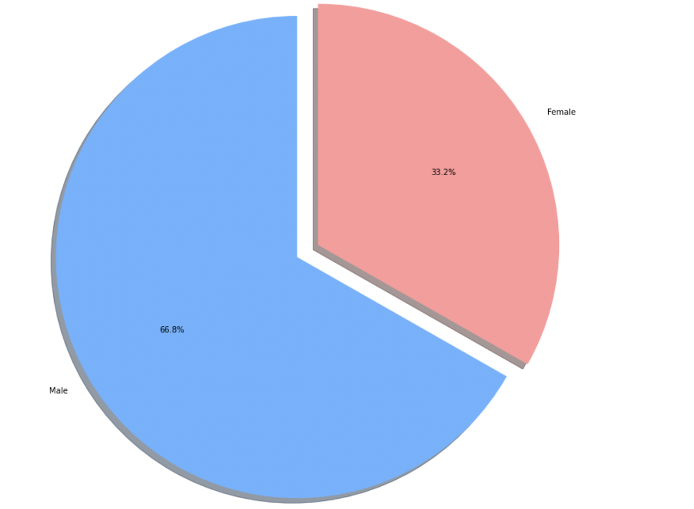
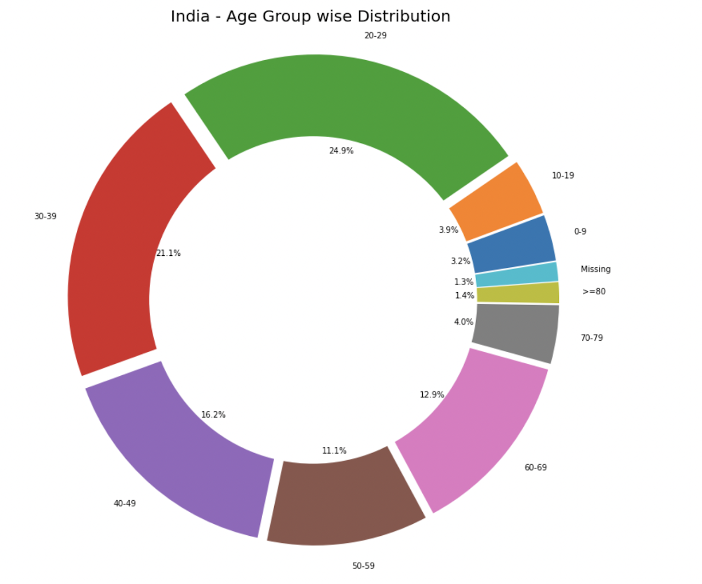
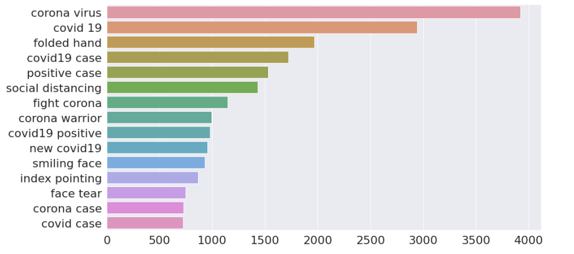
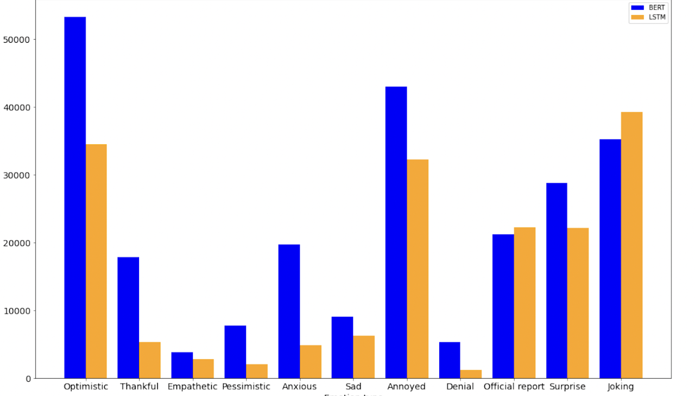
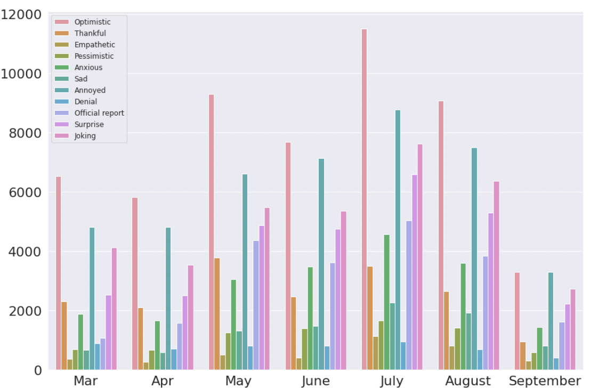
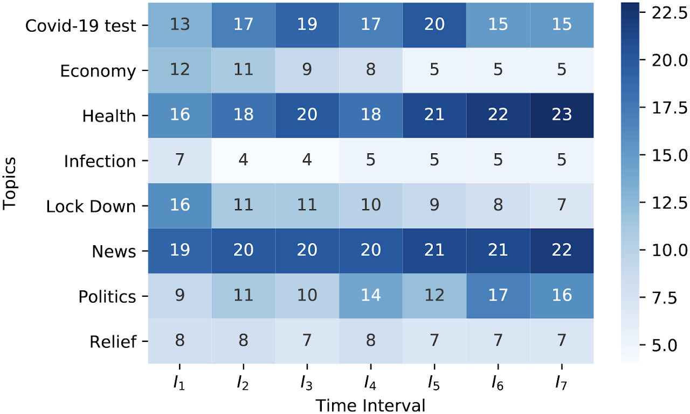
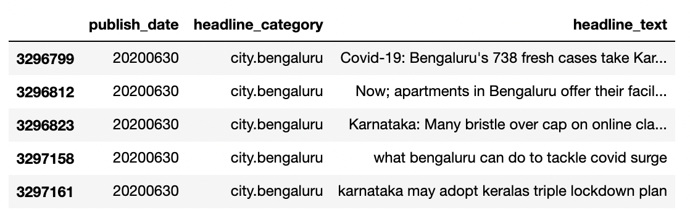
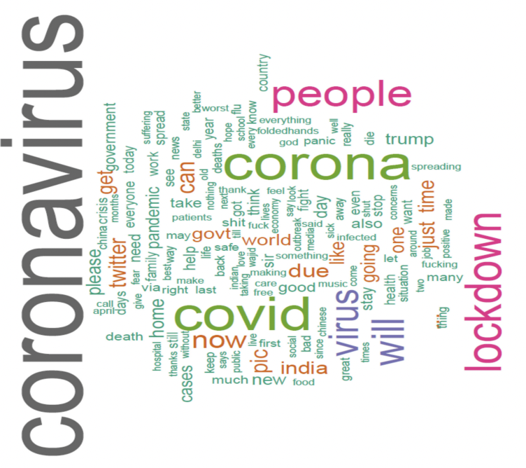

Its a month long experiment to know and determine who actually is falling sick, the experiment is done on interactive maps of the India. Who is falling sick can answer who must be cured? Once we know both these stuffs, then appropriate diagnostic can be done. Is this extensible, can this be scaled to diagnose disease outbreak before they occur? Can this be useful in Omichrome too?
Its a month long experiment to know and determine who actually is falling sick, the experiment is done on interactive maps of the India. Who is falling sick can answer who must be cured? Once we know both these stuffs, then appropriate diagnostic can be done. Is this extensible, can this be scaled to diagnose disease outbreak before they occur? Can this be useful in Omichrome too?
Thankful to MHA, GOI for the dataset :)
Gender wise break up of covid infected patientsAge wise break up of covid infected patients, to determine who is actually falling sick? The data shoes for the working age group. It is due to both the sheer number of people and their density in urban infected areasBi gram frequency during covid-19 on Times of India headlines, it depicts what India wants to read, different smileys indicate how concerned is the press on this?Emotions on covid tweets in India, it shows how citizens feel about the news and content related to disease, how they communicate among themselves 'about the pandemic' Emotion analysis from March to September for tweets in India, we see the optimistic side of the citizens as optimism has been upRaw news headlines, data headlines, recorded on Times of India headline data of millions of headlinesWord cloud on Covid news from India
Whoa horsey, you arrived here fast, keep waiting for a bit haha, I will be right back with the cool stuff! Till then did you know that senna could drive faster on wet roads than dry ones, no, go watch his documentary once, we will be done by then haha :)